Final-year project · awarded a first
ScreenSense
My final-year project: a mobile app that helps students understand their screen time, mood and stress, then suggests a small, realistic next step. Here's what I built, how it works and what I learned.

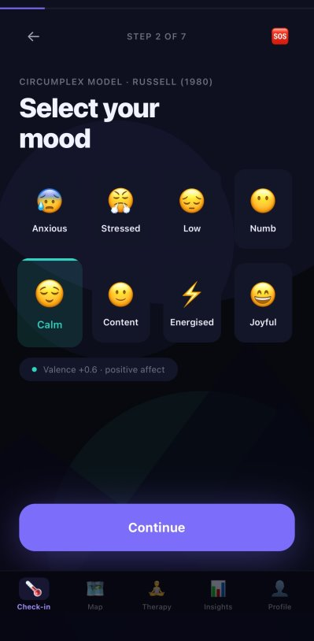
- My roleSole developer: research, design, frontend, backend & ML
- Timeline2025 – 2026 academic year
- PlatformMobile (iOS & Android via Expo)
- StackTypeScript · React Native · Python · FastAPI · PyTorch · scikit-learn
The problem
I didn't want it to be just another mood diary or another generic meditation app.
Most wellbeing apps either give everyone the same advice ("take a break", "go outside") or leave you to tag your own mood. They don't look at how you feel right now, how your week has been going, or what's around you, and they rarely explain why they're suggesting something. I wanted ScreenSense to do both: adapt to the person, and show its reasoning.
Who it's for
Students and young adults who spend a lot of time on their devices and struggle with screen-time balance, digital fatigue or stress.
Design principle
Supportive, not clinical. Suggestions are optional, privacy is visible, and the app never presents itself as a diagnosis.
App tour
real screens from the app, scroll sideways →
A 7-step check-in that takes about 2 minutes, then insights that build up over time.
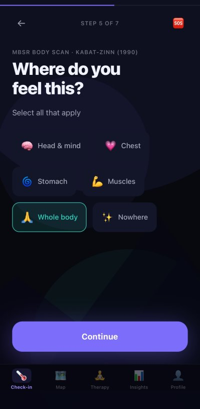
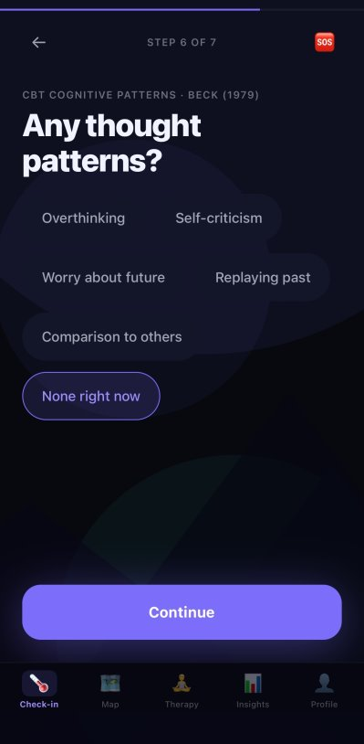
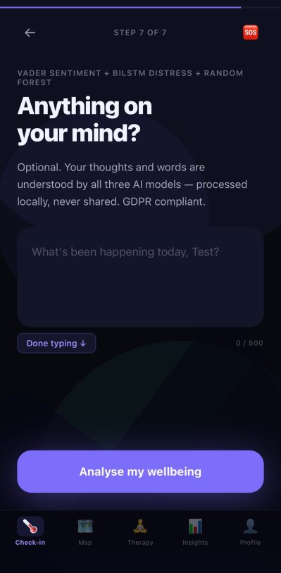
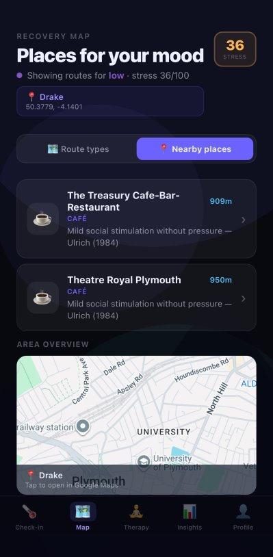

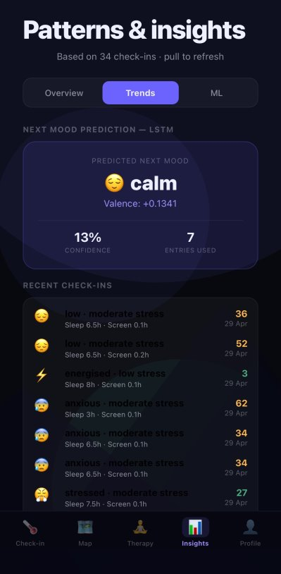
How it works
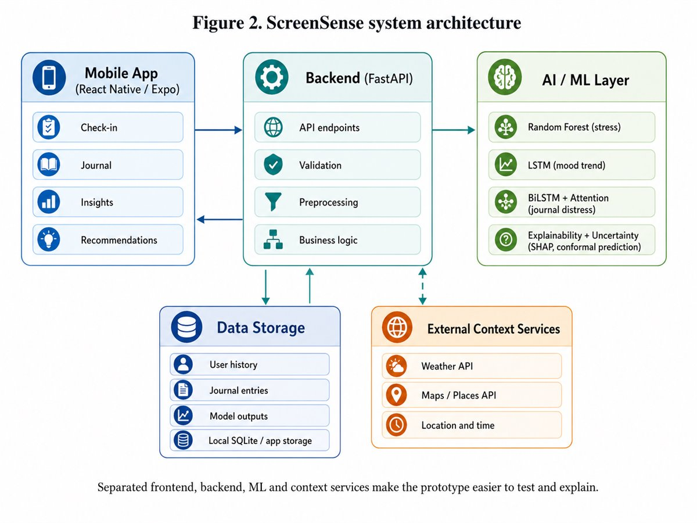
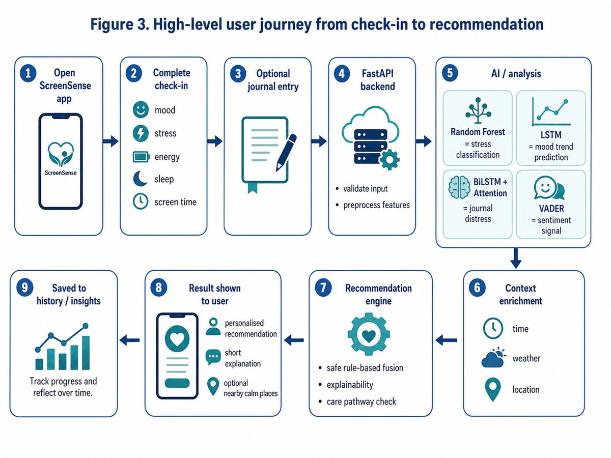
The machine learning
Stress classification
Random Forest
Uses behavioural and check-in data such as screen time, sleep and mood. It suits tabular data and supports SHAP explanations.
79.8% weighted F1 on held-out test data
Mood trend
LSTM
Learns from the sequence of past check-ins to predict the direction of your next mood, shown on the insights screen.
Working prototype. Needs longer real-world data before stronger claims.
Journal analysis
BiLSTM + Attention & VADER
Reads optional journal text to spot distress. VADER sentiment adds a second, lightweight signal.
Working prototype with a keyword fallback if the model is unavailable.
- Cross-validated F181.5%
- Out-of-bag accuracy81.4%
- Cohen's κ0.679substantial agreement
- Bootstrap 95% CI78.1 – 81.4%1,000 resamples
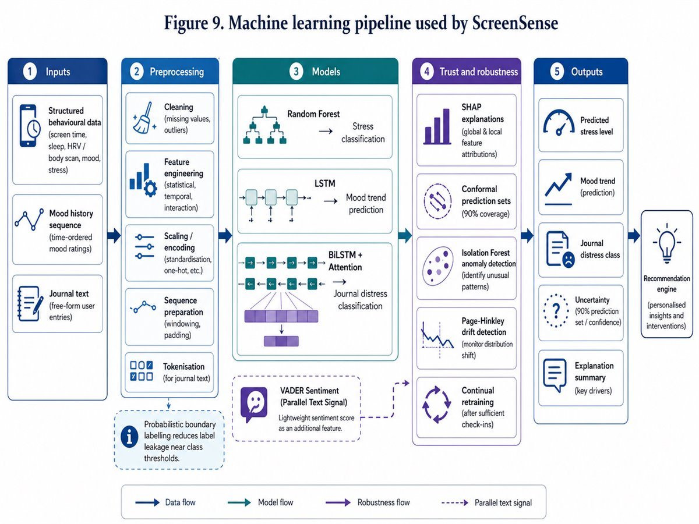
Honest about the numbers
I report realistic held-out results, not the inflated accuracy from early experiments. The 1.7-point gap between cross-validated and test F1 suggests mild overfitting, which is expected because most training data was synthetic.
Built for trust
- SHAP shows which factors drove each stress prediction
- Conformal prediction means uncertain results are worded carefully
- Isolation Forest filters out physiologically implausible inputs
Safe recommendations
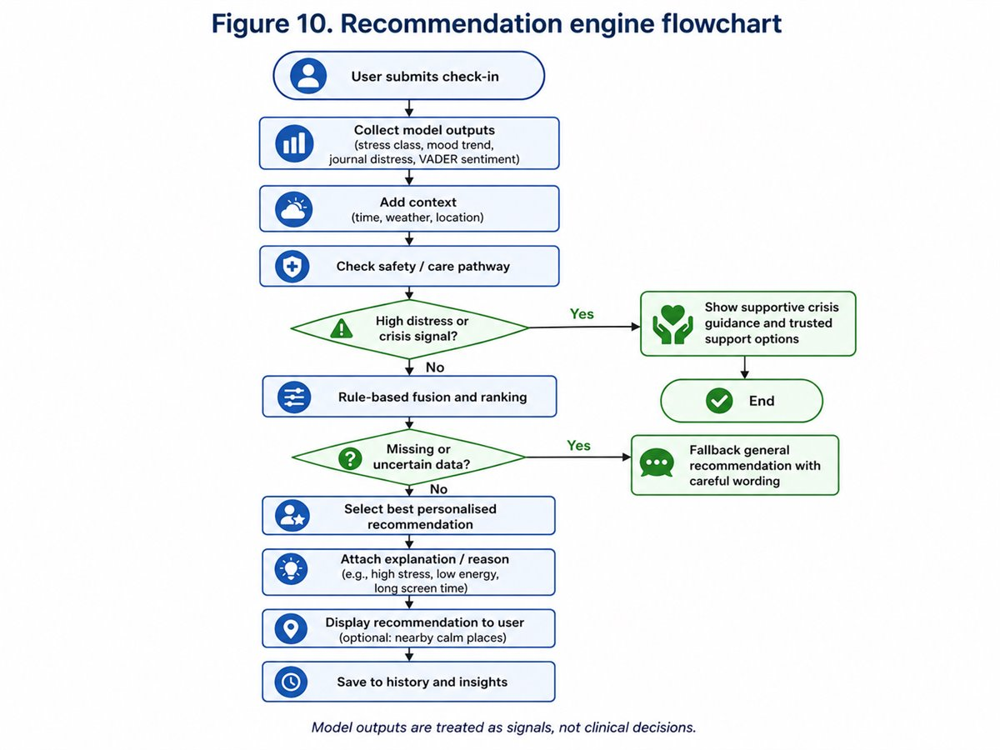
Informed by NHS stepped care
Suggestions scale with need. For example, high stress with low energy gets a short breathing exercise or a break, and low mood on a nice day gets a walk to a nearby calm place. If journal distress is high, the app shows trusted crisis support (including Samaritans), and an SOS button is always one tap away.
Fails safely
If a model or context data is unavailable, the API returns a safe general recommendation instead of crashing.
Testing & user feedback
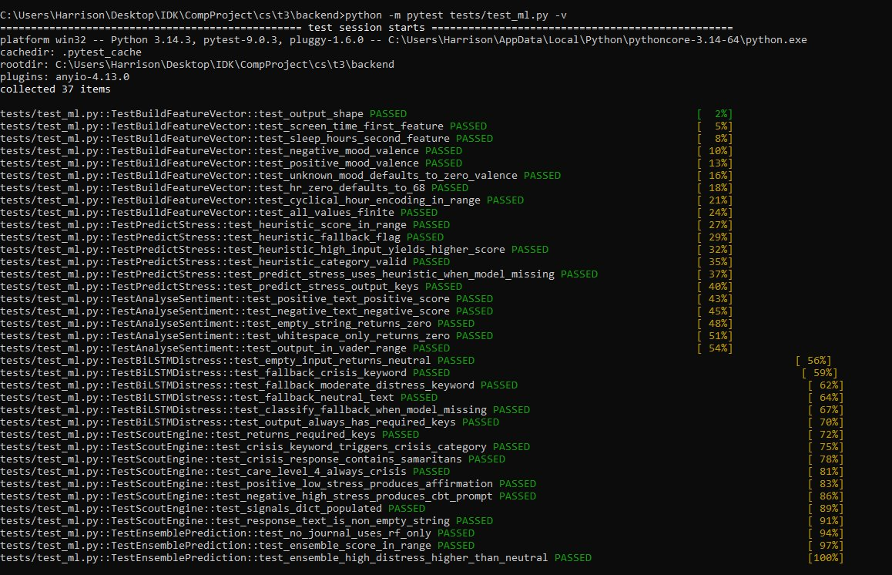
Usability testing with 3 users
Testers ranged from technically confident to non-technical.
- A step-by-step check-in was easier to follow than one long form, so I kept the staged flow
- Testers wanted advice that never sounds like a diagnosis, so I strengthened the safe, stepped-care wording
- A non-technical tester wanted to know why data was collected, so I made the privacy messages more visible
- Next: stronger onboarding, clearer feedback after submitting, and more variety in recommendations
Privacy by design
Minimum data, stored locally
The app collects only what recommendations need and stores data locally in the prototype. Journal and context data are optional, and users can export their full history as CSV. It follows GDPR principles of data minimisation, purpose limitation and consent.
What I'd add for production
Stronger encryption, authentication and access controls, plus a larger real-world study before any claims about wellbeing impact.
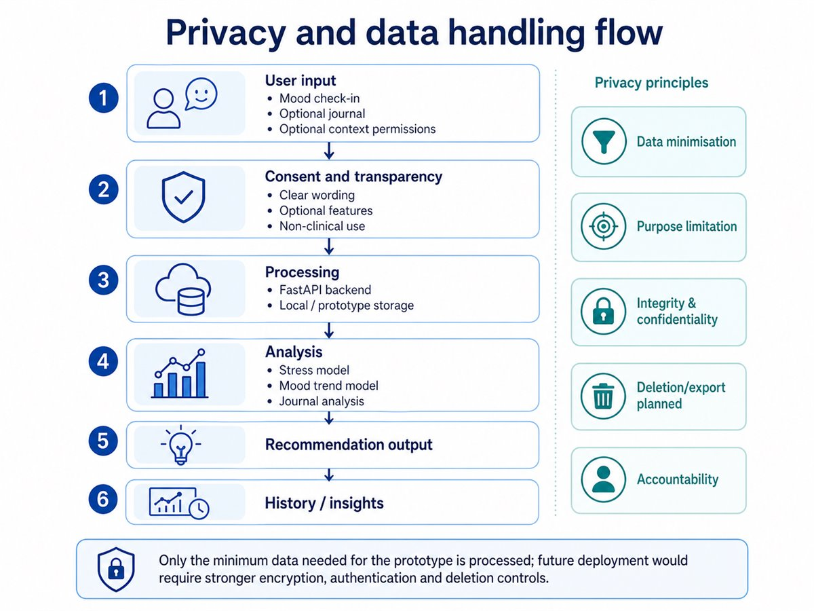
Challenges & what I learned
Rebuilding after losing work
In February, part of the project was lost and had to be rebuilt. I re-prioritised and restored the core system first (backend, frontend, AI pipeline and recommendations), then used the remaining time on polish and testing. The project still earned a first.
What I'd do differently
- Check backups more often and tag stable releases earlier
- Plan smaller milestones and set aside more time for final QA
- Collect real (not synthetic) training data earlier
- Run a larger, longer user study
Want to hear more?
I'm happy to walk through ScreenSense in more detail. I'm looking for graduate and junior developer roles.